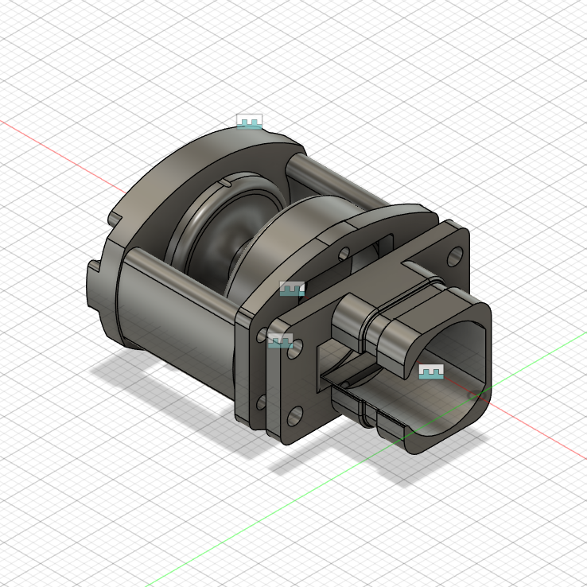
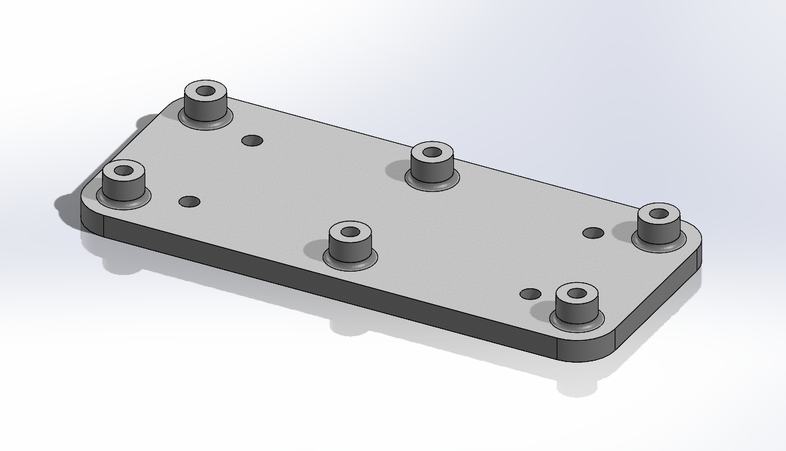
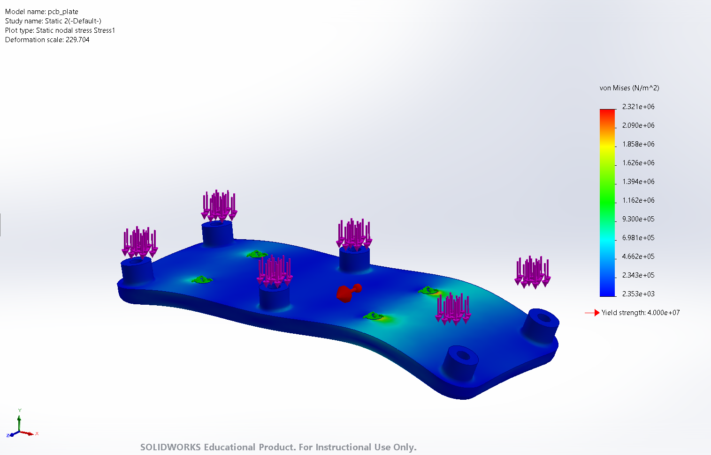
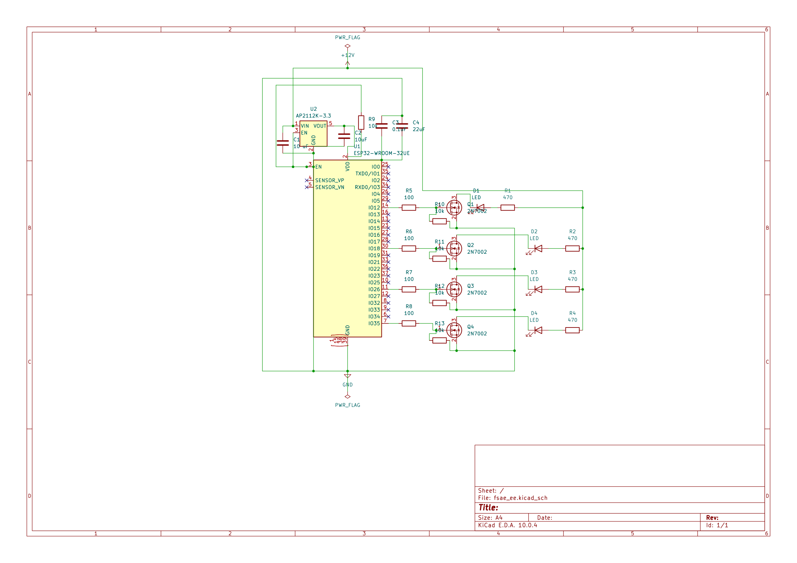
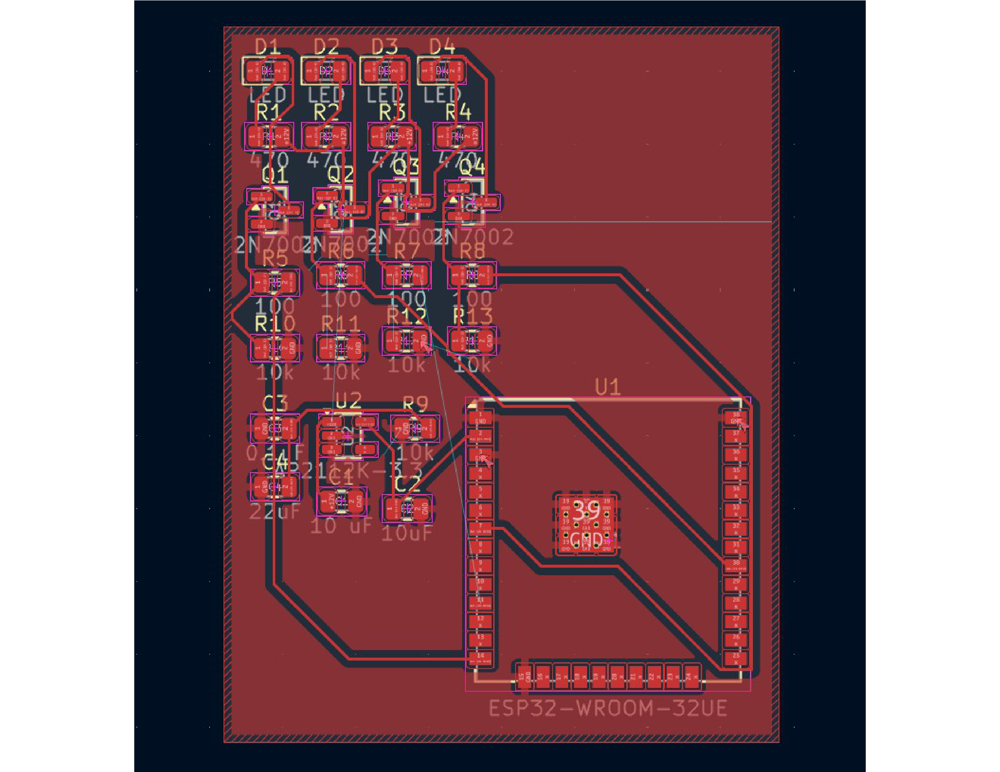
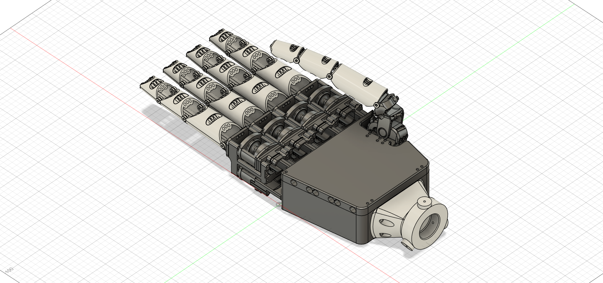
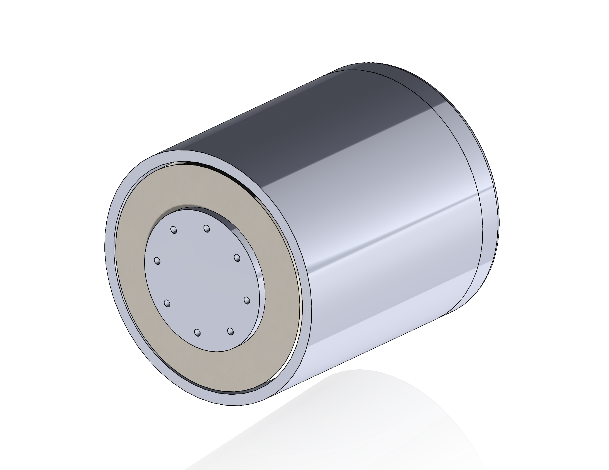
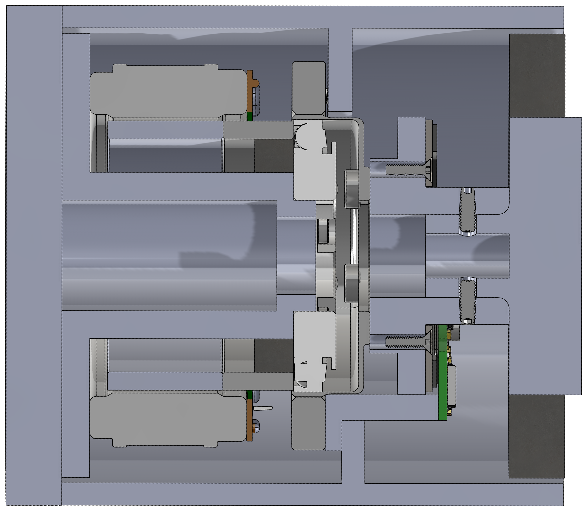
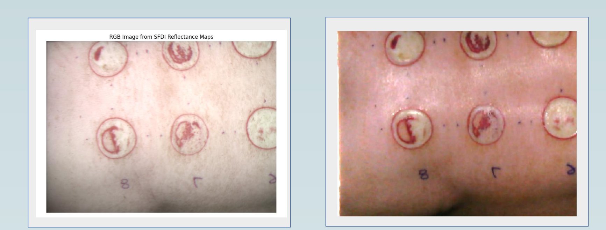
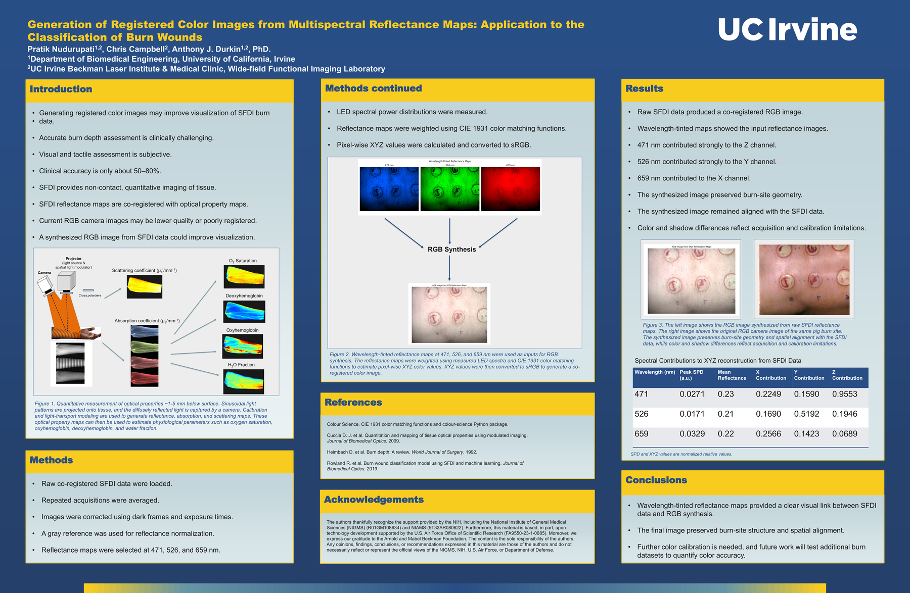

Actuators, robotics, and structural design — I build mechatronic systems from first-principles derivations through FEA-validated hardware. Biomedical Engineering student at UC Irvine, mechanical-focused.

A differential tendon-drive actuator, solved analytically for zero-slack take-up before any parts were cut.


A TPU isolation mount protecting a control PCB from vibration and shock on a formula-style EV chassis.


Embedded firmware and PCB for a 4-LED progressive shift light with gear-aware RPM thresholding.

A gear-driven transmission housing individually actuated fingers, packaged within a hand-scale envelope.


A CAD design study integrating a frameless torque motor, a strain-wave (harmonic drive) reducer, and an off-axis absolute encoder into a single robot-arm joint.


A Python imaging pipeline that reconstructs clinically-readable color images directly from multispectral SFDI reflectance maps, improving visualization for burn-wound classification.
Open to mechanical design, robotics, and hardware engineering roles.